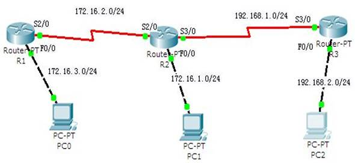

实训任务5：添加静态路由

1）完成各PC机和路由器的基本配置：
| 设备名称 | IP 地址 | 子网掩码 | 默认网关 |
|---|---|---|---|
| PC0 | 172.16.3.10 | 255.255.255.0 | 172.16.3.1 |
| PC1 | 172.16.1.10 | 255.255.255.0 | 172.16.1.1 |
| PC2 | 192.168.2.10 | 255.255.255.0 | 192.168.2.1 |
路由器R1
Router(config)# host R1
R1(config)# int f0/0
R1(config-if)# ip add 172.16.3.1 255.255.255.0
R1(config-if)# no shut
R1(config)# int s2/0
R1(config-if)# ip add 172.16.2.1 255.255.255.0
R1(config-if)# clock rate 64000
R1(config-if)# no shut
路由器R2
Router(config)# host R2
R2(config)# int f0/0
R2(config-if)# ip add 172.16.1.1 255.255.255.0
R2(config-if)# no shut
R2(config)# int s2/0
R2(config-if)# ip add 172.16.2.2 255.255.255.0
R2(config-if)# no shut
R2(config)# int s3/0
R2(config-if)# ip add 192.168.1.1 255.255.255.0
R2(config-if)# clock rate 64000
R2(config-if)# no shut
路由器R3
Router(config)# host R3
R3(config)# int f0/0
R3(config-if)# ip add 192.168.2.1 255.255.255.0
R3(config-if)# no shut
R3(config)# int s3/0
R3(config-if)# ip add 192.168.1.2 255.255.255.0
R2(config-if)# no shut
2）分别查看R1、 R2、R3的路由表。
路由器R1
R1# show ip route
路由器R2
R2# show ip route
路由器R3
R3# show ip route
3）测试各PC机的连通性。
PCO
PC> ping 172.16.1.10
PC> ping 192.168.2.10
结论：PC0、PC1、PC2互不通。
4）分别用不同的方法在R1、R2、R3上配置静态路由（包括默认路由），实现各PC机之间相互能ping通的目标，并查看此时各路由器上的路由表。
路由器R1
R1(config)# ip route 0.0.0.0 0.0.0.0 172.16.2.2
R1# show ip route
路由器R2
R2(config)# ip route 172.16.3.0 255.255.255.0 172.16.2.1
R2(config)# ip route 192.168.2.0 255.255.255.0 192.168.1.2
R2# show ip route
路由器R3
R3(config)# ip route 0.0.0.0 0.0.0.0 192.168.1.1
R3# show ip route
PC0
PC> ping 172.16.1.10
PC> ping 192.168.2.10
结论：PC0、PC1、PC2互相连通。